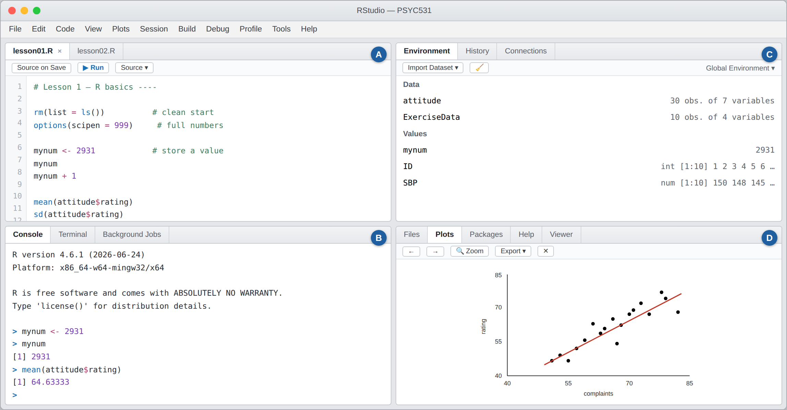

Lesson 0 — Install R and RStudio
You need two programs. They work together:
- R is the engine that does the statistics.
- RStudio is the dashboard you actually sit in front of.
Watch out
Install R first, then RStudio. RStudio looks for R when it starts up, so the order matters.
Step 1 — Install R (version 4.6.1)
Do this even if you have used R before. Old versions cause problems later in the term.
Windows: go to https://cran.r-project.org/bin/windows/base/ and click the big link at the top, Download R-4.6.1 for Windows.
Mac: go to https://cran.r-project.org/bin/macosx/ and choose:
R-4.6.1-arm64.pkgif your Mac has an Apple chip (M1, M2, M3, M4)R-4.6.1-x86_64.pkgif it has an Intel chip
Not sure which? Apple menu → About This Mac → look at the Chip or Processor line.
Then open the file you downloaded and keep clicking Next or Continue. The default settings are correct. If it asks a yes/no question, say yes.
Step 2 — Install RStudio (version 2026.08.0)
Go to https://posit.co/download/rstudio-desktop/ and scroll to Install RStudio. The page detects your computer and offers the right file. Download it, open it, accept the defaults. It is free.
Already have RStudio? Open it and choose Help → Check for Updates.
Tip
If you just installed a new R, point RStudio at it: Tools → Global Options → General → R version → Change…, pick R 4.6.1, then restart RStudio.
Step 3 — Open RStudio and find your way around
Open RStudio — the blue circle with a white R. (If you open a plain white window with no panels, that is base R. Close it.)
Click File → New File → R Script. Now your window is split into four panels:

| Panel | What it is for |
|---|---|
| A top left | Write your code here and save it. This is your homework. |
| B bottom left | Results appear here. Not saved when you close R. |
| C top right | Shows your data and anything you have created. |
| D bottom right | Graphs, help pages, and your files. |
Missing a panel? Use View → Panes → Show All Panes.
Step 4 — Check that it works
Click in panel B, the console, and type the code. Then press Enter.
2 + 2Show what you should see
In the console (panel B):
[1] "R version 4.6.1 (2026-06-24)"
[1] 4If it says a version older than 4.6.1, go back to Step 1, then check Tools → Global Options → General.
Step 5 — Install your first add-on
R comes with the basics. Packages are add-ons other researchers wrote and shared — think of them as apps. You download an app once, then open it whenever you need it.
Type these two lines and run them:
install.packages("car") # download it (needs internet) — do this once
library(car) # open it — do this every sessionLots of red text will scroll past while it downloads. Red
text is not automatically bad. It only went wrong if you see
the word Error.
Careful
Spelling and capitals matter. install.packages("Car")
fails. It is car, all lowercase, in quotes.
It didn't work
- Check your internet, then try again — the download servers are sometimes busy.
- Check the quotes and the spelling:
install.packages("car"). - If R asks "install from sources… which needs compilation?", answering no is safe.
- On a locked-down school computer, let R install to a "personal library" if it offers.
Step 6 — Make a course folder
Do not leave course files in your Downloads folder. You will lose them.
No computer to install on?
If you are using a Chromebook or a locked school laptop, you can run RStudio in a web browser at https://posit.cloud. Make a free account, click New Project → New RStudio Project, and you get the same four panels. Everything in these lessons works there too. The free version limits your hours per month, so use it as a backup rather than your main setup.
Check yourself
Do I need both programs, or is RStudio enough?
Both. RStudio is only the dashboard — without R installed, there is no engine to run your code.
How often do I run install.packages("car")?
Once. But you need library(car) every time you
open R. Install = download the app. Library = open the app.